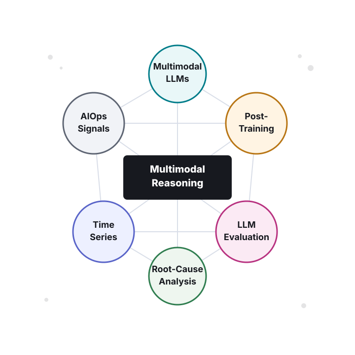

LLM Post-Training & Reasoning
How LLMs align with user intent, inspect long numerical sequences, use tools, and reason over multimodal evidence.
View Work →I am a Ph.D. candidate in the Department of Computer Science and Technology at Tsinghua University, advised by Prof. Dan Pei in NetMan Lab. My research lies at the intersection of multimodal large language models, post-training, alignment, reasoning, and their applications in AIOps.
My recent work focuses on LLM post-training and reasoning in practical, data-rich settings: aligning model behavior with human intent, improving long-sequence numerical understanding through multimodal perception and tool use, and building reliable evaluation protocols for domain-specific LLMs.
I received my B.E. degree in Computer Science and Technology from Tsinghua University in 2023. I have held algorithm research internships at ByteDance, Huawei, ZTE, eBay, and RealAI, producing two first-author ICML 2026 papers and first-author projects on LLM post-training, multimodal reasoning, and fault diagnosis.
Building LLM systems that understand multimodal evidence, align with human intent, and support practical decision making.

How LLMs align with user intent, inspect long numerical sequences, use tools, and reason over multimodal evidence.
View Work →Practical evaluation pipelines for vertical-domain QA, document-grounded reasoning, benchmark generation, and answer completeness.
View Work →Robust time-series forecasting, efficient inference-time scaling, and fault localization under real distribution shifts.
View Experience →Robustness and security of physical AI systems, including adversarial 3D perception and face-recognition reliability.
View Work →Recent research updates and publications.
For the full list, see my Google Scholar profile.
Research FocusLLM Post-Training & Reasoning
Aligns anomaly decisions with user intent by combining structured intent parsing, memory retrieval, verification, supervised fine-tuning, and reinforcement learning.
Research FocusLLM Post-Training & Reasoning
Improves numerical precision and fine-grained localization for long sequence analysis through glance-and-gaze reasoning and multi-turn tool-use trajectories.
Research FocusReliable Forecasting & Diagnosis
Stabilizes fault diagnosis under software-induced distribution shifts with change-aware alignment and contrastive fault clustering.

Research FocusReliable Forecasting & Diagnosis
Identifies recent-data bias as a key robustness bottleneck in time-series forecasting and mitigates it with global-context modeling.

Research FocusReliable Forecasting & Diagnosis
A training-free inference-time scaling framework that improves forecasting accuracy by 19%, reduces peak memory by 6.4x, and reduces inference time by 16.9x.

Research FocusLLM Post-Training & Reasoning
Builds an LLM-based foundation reasoning model for fault root-cause localization with structured deep thinking, with production deployment.

Research FocusLLM Post-Training & Reasoning
Introduces time series as a first-class modality for LLM-based numerical question answering and reasoning.

Research FocusLLM Evaluation & Benchmarking
The first bilingual multi-task dataset in the Ops domain for evaluating LLMs across alerts, logs, metrics, traces, configurations, and complex reasoning.

Research FocusLLM Evaluation & Benchmarking
Deploys document-driven benchmark generation for Ops-domain LLM evaluation, producing 4,845 domain-grounded QA pairs and supporting internal model selection.

Research FocusLLM Evaluation & Benchmarking
Automates technical-support QA evaluation with key-term matching, step-order verification, and completeness checks, outperforming the previous state of the art by 7.6% AUC.

Research FocusRobust AI Systems
Develops adversarial textured 3D meshes for evaluating and improving the robustness of physical face-recognition systems.
Research FocusRobust AI Systems
Improves robust physical adversarial face attacks by optimizing 3D patches in the StyleGAN latent space.
Industry research experience across LLMs, AIOps, time-series modeling, and fault diagnosis.
Algorithm Engineer. Research on LLM post-training, multimodal reasoning, inference-time enhancement, and multi-turn reasoning evaluation. Outputs: first-author papers TameR and SPRINT (ICML 2026, CCF A); two first-author ongoing works on LLM post-training and multimodal reasoning; a related intent-aligned anomaly-detection line validated in an internal intelligent alerting workflow.
Algorithm Engineer. Researched OTN-STFM for optical transport networks, combining metrics, alarms, and topology for anomaly detection and root-cause localization. Outputs: an internally validated optical-network fault-localization model, practically validated on internal backbone-network fault-localization tasks.
Algorithm Engineer. Built operations-domain LLM QA data, document-driven benchmark generation, and automated QA evaluation pipelines. Outputs: co-author papers OpsEval (FSE 2025, CCF A), Eagle (FSE 2026, CCF A), and TechSupportEval (IJCNN 2025, THU B, CCF C); the evaluation pipelines were used for internal practical LLM development and assessment.
Algorithm Engineer. Developed latent-space intervention recognition algorithms for root-cause localization in complex internal systems. Outputs: co-author paper LatentScope (KDD 2024, CCF A) and internal engineering validation.
Selected awards and recognitions.